Introduction
I am writing this in August 2024 — right after the UK’s recent wave of far-right, anti-immigrant riots. Such events will only start to become more common in the future, as European populations continue to be riled up against their nations’ liberal immigration policies over the past 30 years.
Many news outlets have already voiced their opinions, with Elon Musk warning of a “civil war” while others dramatically proclaimed the “death of Europe.” Even most ordinary people are aware of this at this point.
As for myself – I want to take a step back, and offer an Eastern perspective to this entire saga. Watching the UK news, I could not help but compare recent European events with the slow decline (and eventual collapse) of the 🐲 Qing Dynasty (1644 - 1911) — the end of the Chinese imperial system.
More specifically, these riot scenes reminded me of the 🐉 Boxer Rebellion (1899 - 1901), a violent anti-foreign and populist uprising. I actually don't think this is a Boxer-level movement yet, just to be clear, but there's certainly the possibility that it will eventually lead to something larger.
I’m going to break down the similarities in the following categories, and end up with a list of predictions based on these common patterns.
-
🧠 Ideology
-
📈 Prosperity
-
😤 Arrogance
-
📕 Policy
-
📉 Stagnation
-
🚬 Addiction
-
🙏 Reform
-
⚔️ Backlash
-
🪦 Collapse
FYI: For the sake of simplicity, I'll be using the term "European Union (EU)" to describe post-WWII Europe in general, starting from around 1950.
I am aware that the EU officially began with the Maastrict Threaty in 1992, but European integration had already been underway since the creation of the European Coal and Steel Community (ECSC) in 1952.
Comparison
European Union
1952 - ?
🧠 Ideology
They bet on a single idea...
Confucianism
All beneath Heaven is rooted in nation. Nation is rooted in family. And family is rooted in self.
Mencius
Confucianism emphasizes tradition, family, and conservatism.
China was afraid of chaos & foreigners — after the horror of barbarian invasions during the Mongols.
However, Confucianism ended up discouraging innovation.
China fundamentally became too closed to new ideas.

Individualism
Men are equal; it is not birth but virtue that makes the difference.
Voltaire
Individualism emphasizes change, freedom, and liberalism.
Europe was afraid of nationalism & dictators — after the horror of fascism during WWII.
However, Individualism ended up disintegrating the national unit.
Europe fundamentally became too open to harmful ideas.
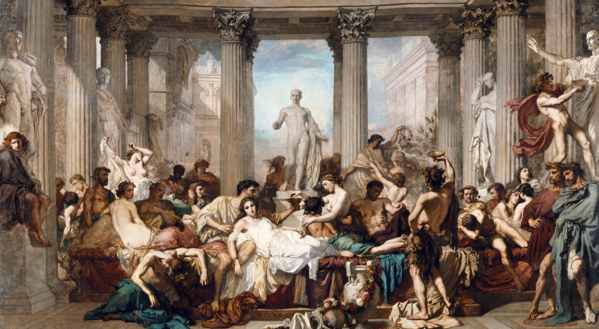📈 Prosperity
... and it worked very well!
The High Qing Era (1683 - 1799)
The Middle Kingdom
The 17th & 18th centuries saw China reach its largest-ever territorial height, commanding an empire of tributary states.
Chinese culture was admired worldwide, inspiring copycats like the Chinoiserie trend in Europe.
The Qianlong Emperor (r. 1735 - 1792)'s incredible 60-year reign marked the high point of Qing China, as it became the largest economy & most populated nation on Earth.
They thought it would last forever.
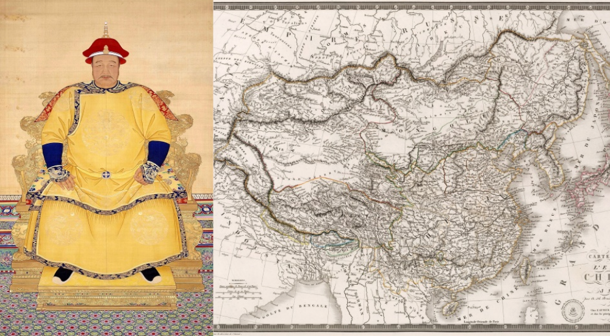The European Miracle (c. 1850 - 1990)
The empire on which the sun never sets
The 19th & 20th centuries saw Europe reach its largest-ever territorial height, commanding an empire of colonies.
European culture was admired worldwide, inspiring copycats like the Occidentalism trend in Japan & America.
Queen Victoria (r. 1837 - 1901)'s incredible 63-year reign marked the high point of the British Empire, as it became the largest economy & most populated empire on Earth.
They thought it would last forever.
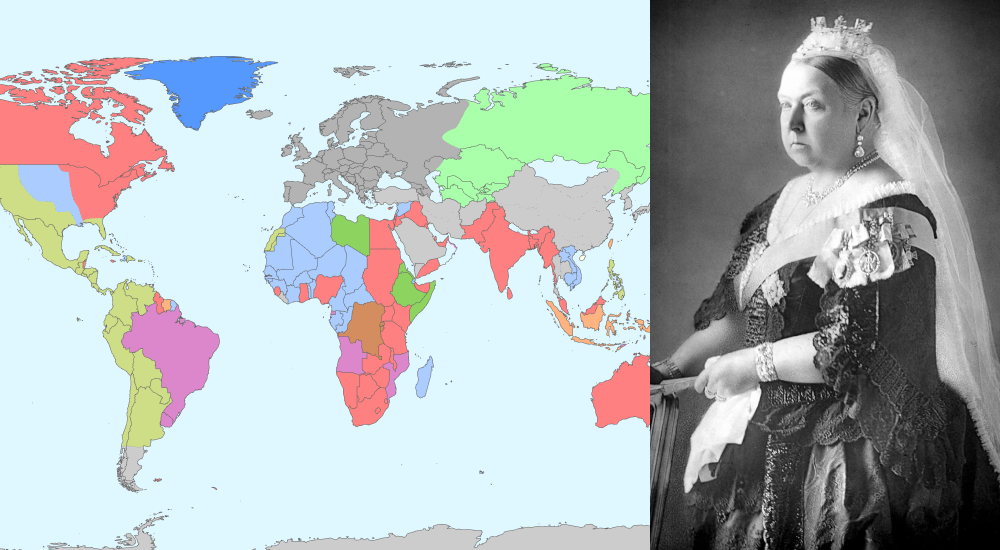😤 Arrogance
But they became detached from reality...
Sinocentrism
Our Celestial Empire possesses all things in prolific abundance and lacks no product within its own borders.
There was therefore no need to import the manufactures of outside barbarians in exchange for our own produce.
Qianlong Emperor, 1793
China viewed the outside world as uncivilized “barbarians" — going so far as to outright reject European technology as useless (Macartney Embassy).
Vassals like 🇻🇳 Vietnam, 🇰🇷 Korea, and 🇯🇵 Japan supported this notion of Chinese superiority.
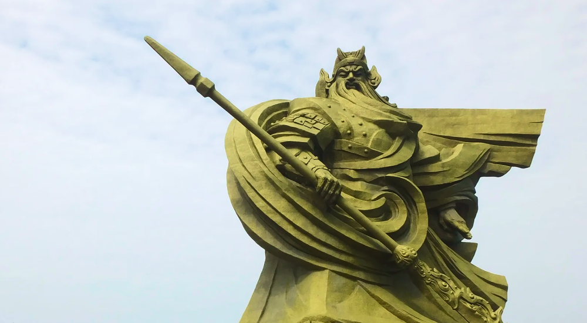European Supremacy
Take up the White Man's burden—
Send forth the best ye breed—
Go bind your sons to exile
To serve your captives' need;
Rudyard Kipling, 1899
Europe views the outside world as backwards — as evidenced by the Western Media’s condescending tone toward everyone else (CCP, dictatorships, etc.).
Offshoots like the 🇺🇸 US, 🇨🇦 Canada, and 🇦🇺 Australia supported this notion of European superiority.
📕 Policy
... and made a critical mistake.
Isolationism (c. 1750 - 1850)
It is better to keep the barbarians beyond the frontiers than to allow them to enter and make trouble.
Daoguang Emperor
Isolationism led China to close itself from the rest of the world, which meant inevitable decline.
1757: The 📕 Canton System was established, limiting foreign trade to one single port.
1793: The 🇬🇧 Macartney Embassy was rejected by the Qing emperor, isolating China even more.
Mass Immigration (c. 1980s - present)
Borders are the worst invention ever made by politicians.
Jean-Claude Juncker
Openness led Europe toward a liberal immigration policy, which meant inevitable ethnic conflict.
1968: The 🇫🇷 May 68 movement established liberalism & openness as core European values.
1992: The 📕 Maastricht Treaty formed the European Union, opening Europe even more.
📉 Stagnation
They failed to reboot & modernize...
Industrialization
China fell behind on industrialization, while Europe & America were building steam engines.
1769: The 🇬🇧 Watt steam engine began the Industrial Revolution in England, not China.
1883: The 🇩🇪 Benz Company was founded, eventually going on to invent the first automobile.
1861: The 🇺🇸 Edison Company invented the incandescent lightbulb, kickstarting the electrification race.
Information Technology
Europe fell behind on high-tech industries, while China & America were building tech conglomerates.
1984: The 🇺🇸 Apple Macintosh began the PC Revolution in America, not Europe.
2006: 🇨🇳 DJI was founded, eventually going on to become the largest consumer drone company in the world.
2022: 🇺🇸 OpenAI released ChatGPT, kickstarting the new AI race.
💵 Infiltration
... while foreign products flooded their markets ...
Industrial Products
China was flooded by cheap manufactured European products, which decimated many local traditional industries.
The Emperor set trade restrictions and laws to prevent this flooding, but the Western powers forced the markets to open.
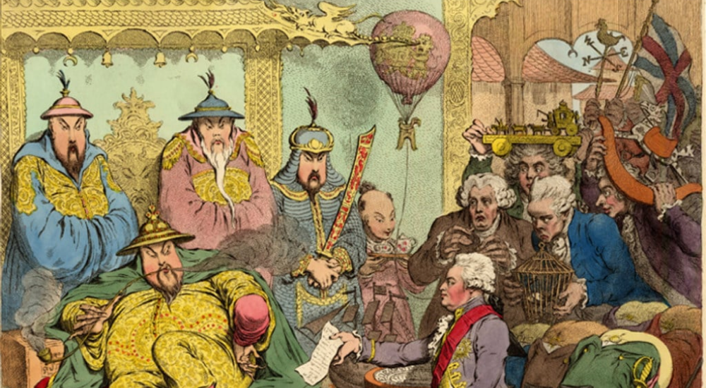Made in China
Europe was flooded by cheap manufactured Chinese products, which decimated many local traditional industries.
The EU set trade restrictions and laws to prevent this flooding, and we are yet to see what China will do about this.
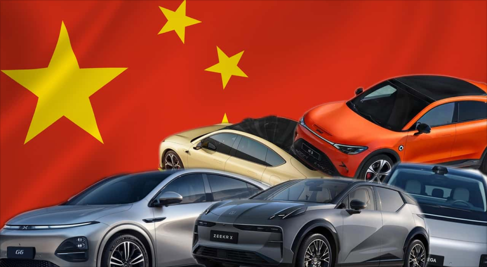🚬 Addiction
...and the population became addicted.
Opium
Opium & other drugs made many Chinese addicted, incompetent, and fueled by smugglers.
The British & Europeans purposely smuggled opium to make more money.
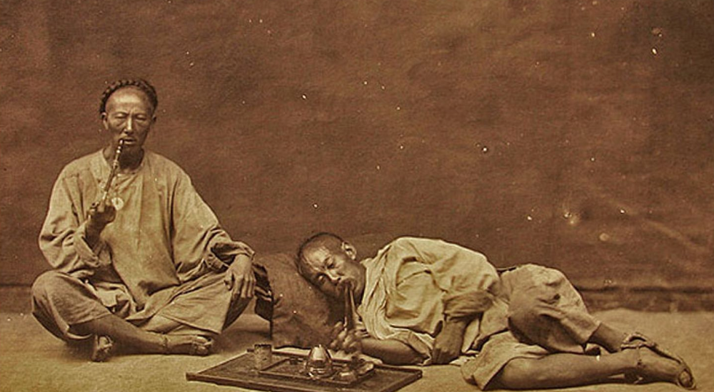Algorithms
Social media algorithms made many Europeans addicted, incompetent, and fueled by rage politics.
The Americans & Chinese purposely designed addictive apps to make more money.
🙏 Reform
They attempted last-minute reforms...
Westernization (c. 1860 - 1910)
Realizing China's downward spiral, there were late aattempts by the Chinese to prevent the empire's decline.
1861: The ✊ Self-Strengthening Movement (自强运动) tried to reverse China's fate, after the Opium Wars revealed the flaws of the Qing system.
1898: The ⚔️ Hundred Days' Reform (戊戌變法) was another last-minute attempt at revival, after the failure of the SSM to deliver.
1901: The 🐉 Late Qing Reforms (晚清改革) were a final attempt to modernize China, just before collapse.
Populism (c. 2015 - present)
Realizing Europe's downward spiral, there were late attempts by the Europeans to prevent the continent's decline.
2016: 🌍 Brexit tried to reverse Britain's fate, after the Syrian Migrant Crisis revealed the flaws of the European Union system.
2024: The ➡️ 2024 EU elections were another last-minute attempt at revival, after the failure of Brexit to deliver.
TBD: We haven't reached this far yet, but I predict we'll be seeing more last-minute attempts at reform.
⚔️ Backlash
...and desperate outbreaks of violence...
Late Qing Rebellions (c. 1850 - 1900)
Disaffected peasants began to riot, attempting to violently restore their nation's former glory.
They fell into 3 main categories: religious movements, left-wing riots, and right-wing riots.
1850: The ☦️ Taiping Rebellion (太平天國運動) caused chaos, warning of demons and monsters in the Qing court.
1851: The ✊ Nian Rebellion (捻亂) was a left-wing insurgency attempting to overthrow the Qing state.
1899: The ⚔️ Boxer Rebellion (義和團運動) attacked foreigners and Christians.
European Riots (2020 - present)
Disaffected workers began to riot, attempting to violently restore their nation's former glory.
They fell into 3 main categories: religious movements, left-wing riots, and right-wing riots.
2022: 🌍 Just Stop Oil caused chaos, warning of environmental disaster from climate change.
2023: The ✊ Nahel Merzouk riots were left-wing insurgencies protesting against the French state.
2024: The ⚔️ UK anti-immigrant riots are attacking foreigners and Muslims.
🪦 Collapse
...but they ultimately failed.
Xinhai Revolution (1911)
In the end, it was too late.
A revolution ended the 300-year-old Qing Dynasty, as well as China's 2000-year-old imperial system.
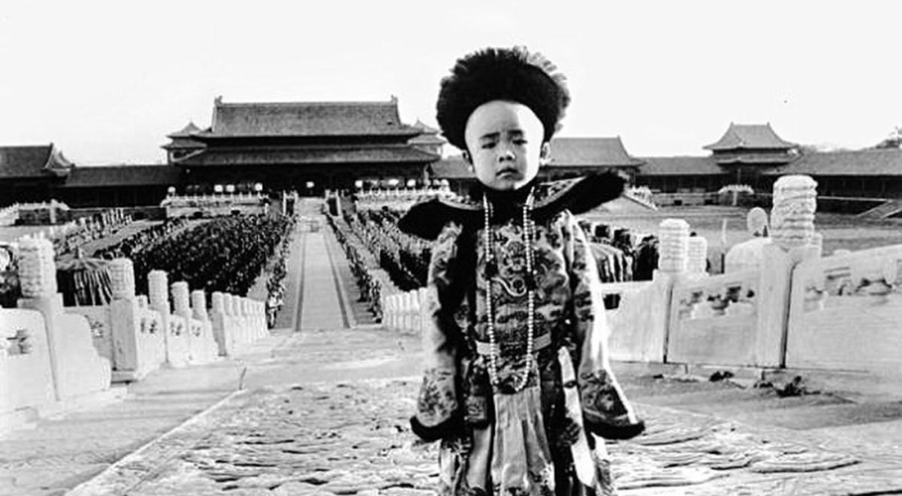TBD
Let's see how this one ends.
My prediction: the European Union will undergo last-minute reforms, before simply dissolving as a project.
The Decline, in 2 Charts
To make this easier to digest, let's put these developments on a chart.
The slow decline and collapse of the Qing Dynasty, as with any other empire, took place in 3 primary stages. For the Qing specifically, most scholars agree that these stages mostly took place in the final 150 years. For the EU, I predict that it will take roughly 100 years in total.
-
👑 Golden Age
-
📉 Decline
-
🪦 Collapse
Obviously, these are not exact numerical charts — it's difficult to put a real number on the prosperity of a nation. However, I believe they accurately represent the slow 3-stage transition from golden age to collapse.
🐲 Qing China (1750 - 1900)
"The old institutions have become nothing but shackles. The Qing government clings to these shackles, unable to move forward, dragging the whole nation down with it."
Liang Qichao
🇪🇺 European Union (1950 - 2050*)
"Europe is sleepwalking toward oblivion. Without a renewed commitment to unity and democracy, the continent faces the specter of political and economic irrelevance."
Jürgen Habermas
If my predictions are correct, this means that we are looking at the final 2-3 decades of a recognizable Europe. The EU itself may still exist by then, but it would be so deeply changed and bruised that it will no longer command the type of authority that it does today.
In other words, this may be the start of a few "decades of humiliation" for the European continent as a whole — although it won't be nearly as bad as China was, since Europe will continue to be vibrant in terms of culture and history.
My Predictions
Of course, one of the benefits of historical literacy is that it allows us to see parallels to our present-day lives.
So with all of that being said, I would like to make 3 predictions about the future of Europe over the next 25 years. Some of these events are already starting to materialize, but I've taken the liberty to weave them together into a grand narrative for us to follow.
1) Foreign Intervention in Europe
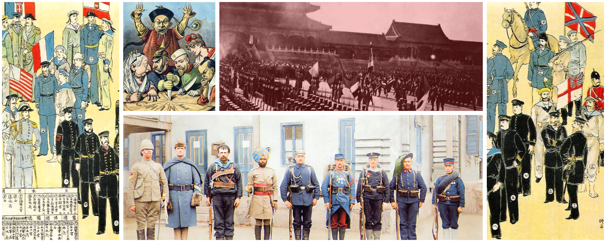"The fall of the Chinese capital to the combined forces of Europe and America marks the end of an era in China. The days of Chinese impunity in the face of Western power are over."
The New York Times, August 1900
When the Boxer Rebellion arose, the 🇬🇧🇫🇷🇷🇺🇯🇵 Eight-Nation Alliance (British, French, Japanese, etc.) sent its armies into China to protect its own citizens & reassert their authority. This was the moment when China really reached its lowest point, with Western & Japanese troops marching into the capital of Beijing.
🔮 I predict that with the rise of the far-right in Europe, 🇮🇳🇵🇰🇸🇦🇨🇳 foreign governments (Indian, Pakistani, Arab, Chinese, etc.) will try to protect its own citizens by supporting immigrant activist organizations.
Let's emphasize how significant this would be. This means that foreign states would be able to establish semi-colonial stakes in Europe — in the former capitals of colonial empires. This is a massive paradigm shift in terms of how we think about the West's place in the world.
2) Cults and Religious Turmoil
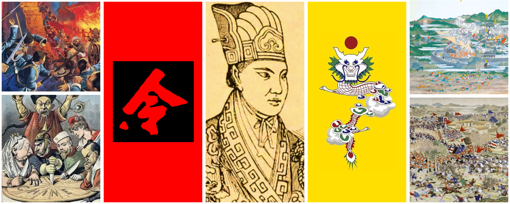When China was declining, many strange cults tried to restore China to its glory days.
Hungry, impoverished peasants were drawn to many strange ideologies, and the Qing court's pathetic incompetence left a vacuum that was filled by radical social & political movements.
These upheavals largely fell into 3 categories:
-
🙏 Utopian cults
-
💵 Left-wing uprisings
-
⚔️ Right-wing uprisings
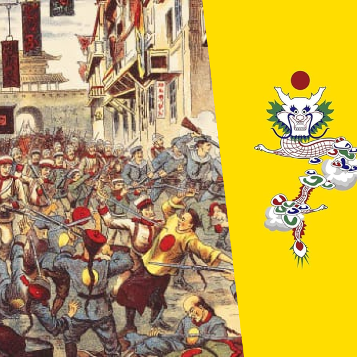
☦️ Taiping Rebellion (1850 - 1864)
Utopian cult
Hong Xiuquan (洪秀全), proclaiming to be the brother of Jesus Christ, led his God Worshipping Society (拜上帝會) into a violent revolution with the goal of establishing the Taiping Heavenly Kingdom.
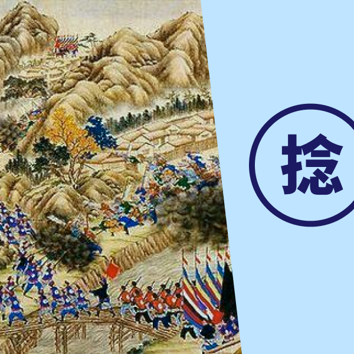
⚔️ Nian Rebellion (1851 - 1868)
Populist / Left-wing uprising
With the slogan "kill the rich and aid the poor", the Nian troops allied with the Taiping Heavenly Kingdom rebels in order to overthrow the Qing establishment.
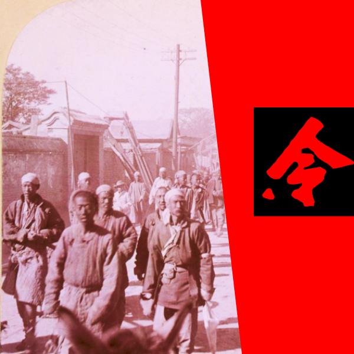
🐉 Boxer Rebellion (1899 - 1901)
Nationalist / Right-wing uprising
The Society of Righteous and Harmonious Fists (義和拳) ("Boxers") violently attacked foreigners, believing that their Chinese martial arts made them invulnerable to Western bullets.
As Europe declines, we're going to see similar radical movements, albeit in a uniquely European cultural context.
We're already starting to see glimpses of this throughout the continent — personally, I would keep an eye out for countries like 🇮🇹 Italy and 🇦🇹 Austria for this kind of right-wing violence. These are nations with large immigrant populations (20%+), but with a strong ethno-nationalist culture and history. It may explode all at once.
Meanwhile, countries like 🇩🇪 Germany or 🇬🇧 Britain are usually stronger footholds for left-wing radicalism, since they tend to have large wealthy elite classes and generally place a heavy cultural taboo against ethnic nationalism.
🔮 I predict that we’re going to see the rise of strange ideologies & movements in Europe, as various groups all claim to be able to restore Europe to its glory days.
🌍 Environmentalism
Utopian cult
Just Stop Oil, Greta Thunberg, and other environmentalists may well become the face of a new utopian, pseudo-religious movement.
💵 Left-Wing Radicalism
Populist / Left-wing uprising
With the slogan "tax the rich", politicans such as Jean-Luc Mélenchon will continue to ally with the Greens / Environmentalists in order to redistribute wealth.
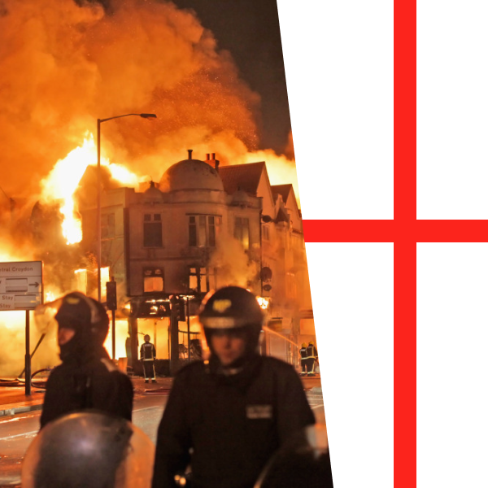
🏰 Right-Wing Nationalism
Nationalist / Right-wing uprising
The English Defence League (EDL), Les Natifs ("The Natives"),and other far-right organizations will keep violently attacking foreigners & attempt to restore their white-majority nations.
It won't be a fun time, but it'll definitely be an interesting one to watch.
3) East Asian / American Robot Race
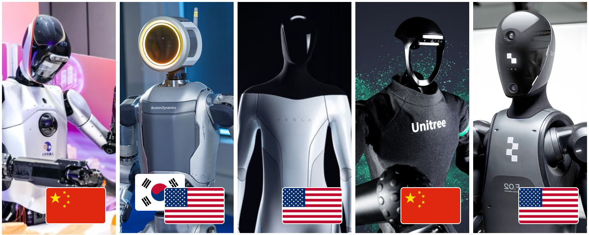When China was declining, the Europeans & Americans enjoyed an unprecedented 300-year golden age of invention and discovery.
There were definitely major crises during this era — including the French Revolution , the Napoleonic Wars, and the American Civil War — but it was clear that Europe was massively pulling away from all other civilizations on Earth. Such crises ended up being "growing pains" that actually helped to elevate Europe's status in the world in the long-term.
These revolutions can be summarized in 3 categories:
-
🧬 Fundamental science
-
🧠 Intellectual philosophy
-
⚙️ Real-world applications
🧪 Scientific Revolution (17 th Century)
Fundamental science
Europe saw an explosion of scientific thought and discovery, led by thinkers such as Galileo Galilei, René Descartes, and Isaac Newton.
ex) Atomic Theory, Laws of Physics, Elements
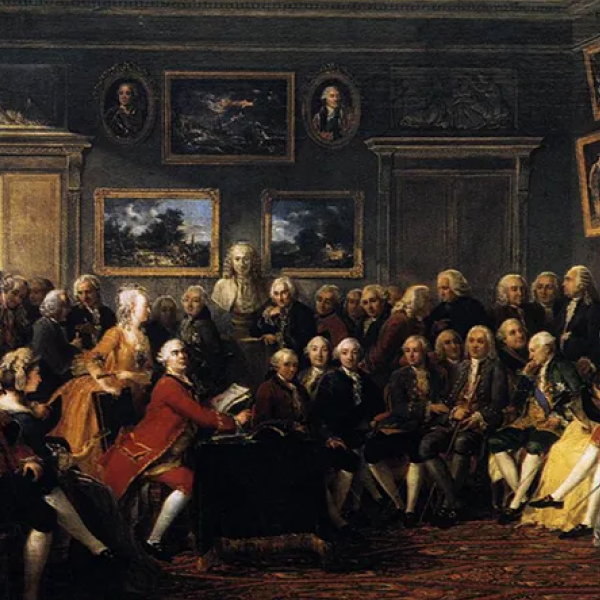
💡 The Enlightenment (18 th Century)
Intellectual philosophy
As the Scientific Revolution unveiled the laws of nature, thinkers began to apply these laws to create new ideological and moral frameworks.
ex) Democracy, Individual Rights, Social Contract
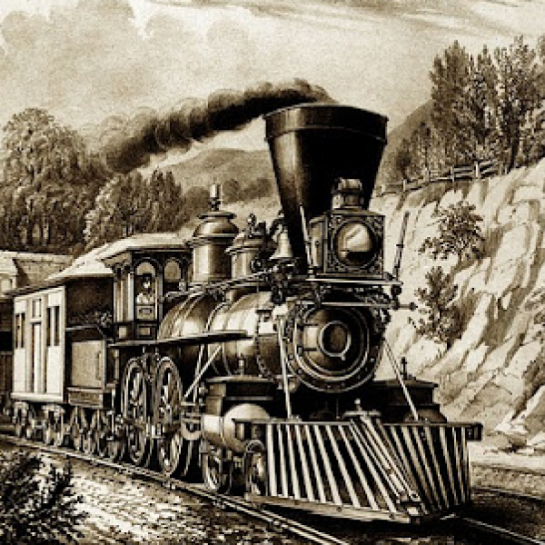
🏭 Industrial Revolution (19 th Century)
Real-world applications
Finally, they were able to use this new knowledge to gain an overwhelming technological advantage over rival nations.
ex) Steam Engine, Automatic Weapons, Automotives
We're seeing similar developments now, mostly with the rise of advanced Artificial Intelligence systems.
🇺🇸 America and 🇨🇳 China will obviously be the major players in this race, but I don't think we should discount the potential roles of countries like 🇰🇷 South Korea, 🇹🇼 Taiwan, or 🇸🇬 Singapore either. All of these nations are facing demographic crises and low birthrates, which may force innovation on the robotics / AI side in order to replenish the shrinking labor force.
🔮 I predict that the East Asians / Americans will lead a new renaissance of technological invention & discovery, primarily led by the US-China competition.
🧠 AI Revolution
Fundamental science
America & China saw an explosion of scientific thought and discovery, led by companies such as OpenAI, Baidu, and Microsoft.
ex) ChatGPT, Language Models, Computer Vision
🙍♂️ Human-AI Ethics
Intellectual philosophy
As the AI Revolution unveils new levels of intelligence, thinkers will begin applying these laws to create new ideological and moral frameworks.
ex) AI Robotics, Automatic Weapons, Automotives
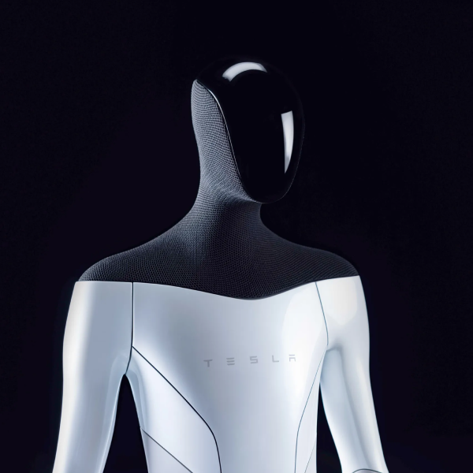
🤖 Robotics Revolution
Real-world applications
Finally, they will use this new knowledge to gain an overwhelming technological advantage over rival nations.
ex) Military Drones, AI Swarms, Humanoid Robots
Final Words
The great decline of Europe will be one of the greatest events of the 21st century, just like the decline of China was in the 19th century.
As we all know, the collapse of the Qing Dynasty eventually led to the 🏯 Century of Humiliation (1840 - 1950) — a roughly 110-year period in which China was relegated to an impoverished backwater. This period still haunts the Chinese mind, as evidenced by the countless films and series made about the exploitation of China by Western powers.
This period has also fascinated the Western mind, inspiring classics such as 🎬 55 Days at Peking (1963) and 🎬 The Last Emperor (1987). Although clearly viewed from a Western lens, these films capture just how powerless China really was during the turn of the last century.
Europe will remain relatively prosperous and free, but its upcoming "Century of Humiliation" may still be quite a sight to behold for the average young European today. The US-China rivalry will continue to dominate the news, with the formerly powerful Europe being relegated to a secondary player in the global landscape. One caveat is, this "Century" probably will not last an actual century — only a few decades, at most. The modern world simply moves faster than it did in the 1800's.
However, this may also give us a glimpse into the future.
China did not stay weak forever. After decades of political turmoil, the modern-day 🇨🇳 People's Republic of China arose and eventually lifted China back up into superpower status. The PRC represents a resurgent, angry China determined to take revenge on the West for its humiliation, scarred by memories of the past.
Could Europe eventually follow a similar path?
Now that's a scary thought: a resurgent, angry Europe determined to take revenge.
Let's hope we don't live to see that far.